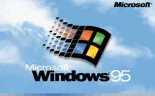

Avanços tecnológicos:
1995: Microsoft lança o Windows 95
1998: Nascem os CDs graváveis e regraváveis (CD-RW); Microsoft lança o Windows 98.


Filmes/desenhos/séries:
1997: Satoshi Tajiri cria o Pokémon (anime)
Músicas de sucesso:
1995: morrem, num acidente aéreo, todos os integrantes do grupo musical Mamonas Assassinas.
Acontecimentos diversos:
1999: o euro passa a circular em 11 países da União Europeia.